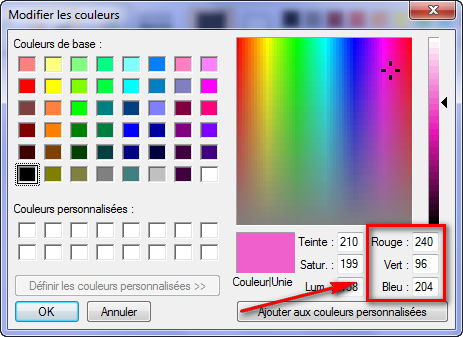

Pour modifier les decorations
Italique
On utilise "font-style:" avec "italic", "oblique" ou "normal".
Et oui ici c'est oblique.
"normal" permet d'enlever l'italique pour em.
Gras
On utilise "font-weight:" avec "bold" ou "normal".
Soulignement et autres decorations
On utilise "text-decoration:" avec :
- underline
- overline
- blink (mais ne fonctionne pas sous chrome et IE)
- none
L'alignement
On utilise "text-align:" avec "left", "center", "right" ou "justify".
Justify permet de faire en sorte que le texte prenne toute la largeur possible sans
laisser de blanc a la fin des lignes.
Remarque : on ne peut aligner qu'un paragraphe
(pas un span par exemple)
Les flottants
Permet de faire flotter une image autour d'un texte par exemple.
On utilise "float:" avec "left" ou "right".
Voyer un exemple ici
Pour stopper un flottant on utilise "clear:" qui peut prendre 3 valeurs :
- "left" apres un "float: left;"
- "right" apres un "float: right;"
- "both" apres un "float: left;" ou "float: right;"
Le vaste monde des couleurs
Avec le nom
Mais il n'y a que 16 couleurs officielles:

La notation hexadecimale
Combinaison de 6 chiffres (de 0 a 9) et de lettres (de A a F) precede d'un #
De #000000 (noire) a #FFFFFF (blanc)
Certain logiciel comme Gimp ou paint.NET permettent de connaitre la couleur correspondante.
Paint.NET
Ceci vous permet de faire naitre
toutes les nuances d'une seule couleur !
Il existe une notation raccourcie : #FA3 equivaut a #FFAA33
La methode RGB
Pour trouver les valeurs ouvrir paint et aller dans "Modifier les couleurs" :

Puis on utilise "color: rgb(240,96,204);"
N'oublier pas d'utiliser la boite a couleurs.
Couleur de fond
On utilise "background-color:" de la meme maniere que color.
Il faut travailler sur la balise body.
Remarque : Si j'applique une couleur de fond noire
et une couleur de texte blanche à la balise body, tous mes titres et paragraphes auront
eux aussi un arrière-plan de couleur noire et un texte de couleur blanche… C'est ce
phénomène qu'on appelle l'héritage : on dit que les balises qui se trouvent à l'intérieur
d'une autre balise « héritent » de ses propriétés.
Cela ne fonctionne pas uniquement pour la couleur, entendons-nous bien. Toutes les
propriétés CSS seront héritées : vous pouvez par exemple demander une mise en gras dans
la balise